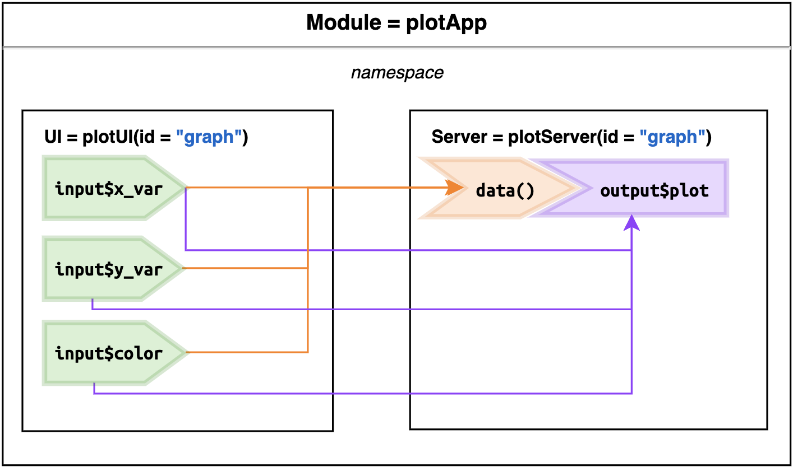

plotMod
Part 1) plot UI module
For the UI module, I defined the UI function below with a single
id argument, and use tagList() so our inputs
play well with the layout functions (like fluidPage(),
sidebarLayout(), etc.).
I use two numeric variables for the x and y
aesthetics (as "x_var" and "y_var"), and a
single factor variable for the color aesthetic (as
"color"). I will also create a values input
for the reactiveValues.
plotUI <- function(id) {
tagList(
# x variable
selectInput(
inputId =
NS(namespace = id, id = "x_var"),
label = "X column",
selected = "body_mass_g",
choices = names(
select(
palmerpenguins::penguins, where(is.numeric)
)
)
),
# y variable
selectInput(
inputId =
NS(namespace = id, id = "y_var"),
label = "Y column",
selected = "bill_length_mm",
choices = names(
select(
palmerpenguins::penguins,
where(is.numeric)
)
)
),
# color
selectInput(
inputId =
NS(namespace = id, id = "color"),
label = "Color column", selected = "species",
choices = names(
select(palmerpenguins::penguins,
where(is.factor))
)
),
# plot
plotOutput(
outputId =
NS(namespace = id, id = "plot")
),
# values
verbatimTextOutput(
outputId =
NS(namespace = id, id = "value")
)
)
}Part 2) Plot server module
Next I built the server module (plotServer()) which also
takes an id argument, but inside this function,
id is inherited by moduleServer().
The moduleServer() also has a module()
arguemnt, which is similar to the standard shiny server function
(i.e. it has input, output,
session):
plotServer <- function(id) {
# create module
moduleServer(id = id, module = function(input, output, session) {
# data
data <- reactive(
select(
palmerpenguins::penguins,
all_of(c(input$x_var, input$y_var, input$color))
)
)
# plot
output$plot <- renderPlot({
# y labels
y_lab <- str_replace_all(input$y_var, "_", " ")
# x labels
x_lab <- str_replace_all(input$x_var, "_", " ")
# graph
ggplot(data()) +
geom_point(
aes_string(
x = input$x_var,
y = input$y_var,
color = input$color
)
) +
labs(
title =
paste0("Histogram of ", x_lab, " and ", y_lab),
x = x_lab,
y = y_lab
)
})
# reactive values
output$value <- renderPrint({
# these will change as inputs change!
values <- reactiveValuesToList(x = input,
all.names = TRUE)
print(values)
})
})
}I also include another reactiveValuesToList() function
to print the reactiveValues.
Part 3) The app
Finally, I created plotMod() for running the
plotUI() and plotServer() modules. I linked
the UI and server functions with identical id arguments
("graph").
plotMod <- function() {
ui <- fluidPage(
# some space
br(), br(),
# plot ui module
plotUI(id = "graph"),
)
server <- function(input, output, session) {
# plot output module
plotServer(id = "graph")
}
shinyApp(ui, server)
}
plotMod()This application is deployed here:
Reactive graph
I’ve adapted the reactive graph to reflect how the
plotUI() & plotServer() module works. The
Producers (green $input values) are in the
UI function, and the reactives (orange expressions) and
Consumers (purple $output values) are in
the server function:

As you can see from this figure, the plotUI() and
plotServer() link the UI to the server via the shared
id ("graph"). The module creates a namespace
that contains all the inputs and outputs.
Below is an adapted reactive graph for the inputs, reactives, and
outputs used to create the graph in plotMod():

The three inputId values (input$x_var,
input$y_var, and input$color) are used to
create the data() reactive:
data <- reactive(
select(palmerpenguins::penguins,
all_of(c(input$x_var, input$y_var, input$color))))These inputIds are also used directly in the
output$plot as:
geom_point(
aes_string(x = input$x_var,
y = input$y_var,
color = input$color))Collectively, these create the following in the UI:

Reactive values
However, recall I also included the
reactiveValuesToList() function, which prints the
reactiveValues (and the inputs) the UI. This is not
necessary for the plot to render, but I’ve included it here to show what
inputs are available in this namespace:

The output shows the three input values I am using in
the data() reactive (and graph). If we change the variables
in the selectInput(), the values change in the
renderPrint() function.
The figure above is meant to illustrate how modules create namespaces that can share inputs, reactives, and outputs. I can extend this example by adding another module to the application for displaying the data in a reactable table.